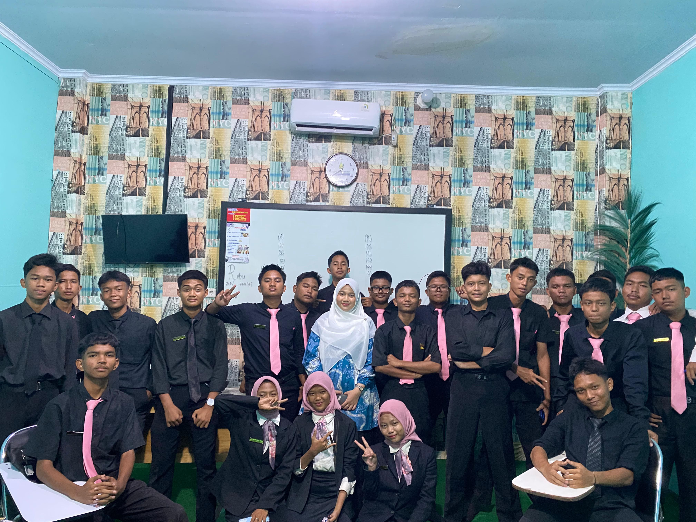
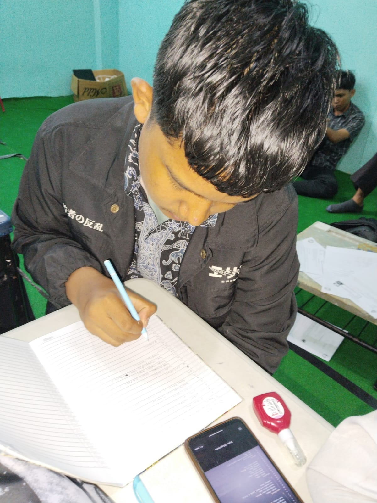
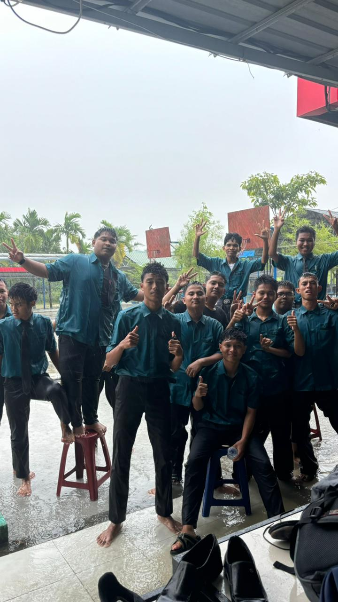
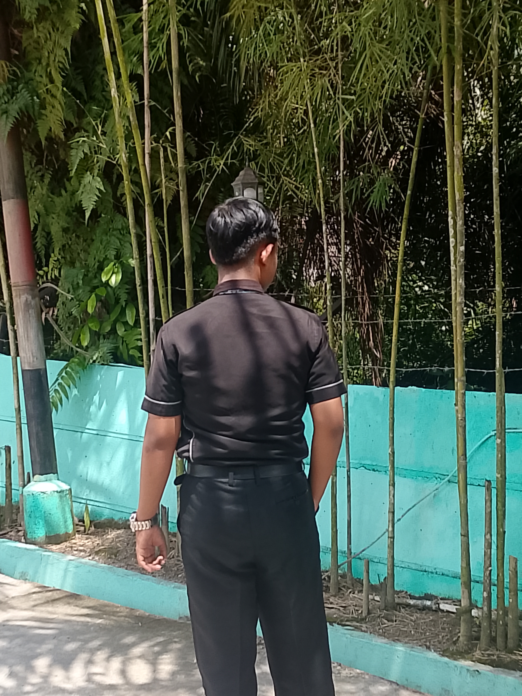

Teknik Komputer & Jaringan
Daftar Sekarang Ke Jurusan Ini
Membangun Karier Global di Dunia Digital
“Di jurusan TKJ, kamu akan belajar tentang komputer, jaringan internet, server, dan teknologi digital modern. Bukan cuma teori, tapi juga praktik langsung seperti merakit komputer, instalasi jaringan, dan konfigurasi perangkat. Jurusan ini cocok buat kamu yang suka teknologi dan ingin punya skill IT yang banyak dibutuhkan di dunia kerja maupun usaha sendiri.”
Apa yang Dipelajari
Cisco CCNA
Cloud Server Admin
Cyber Security Dasar
Karir Masa Depan
Network Engineer
IT Consultant
System Administrator
Cloud Specialist



